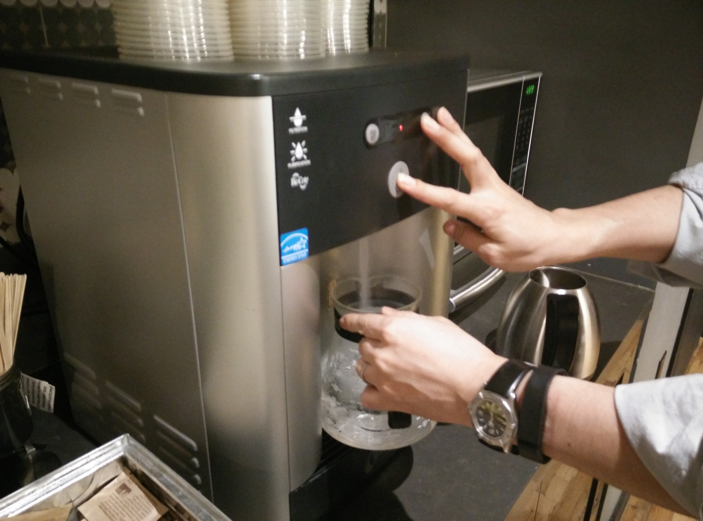
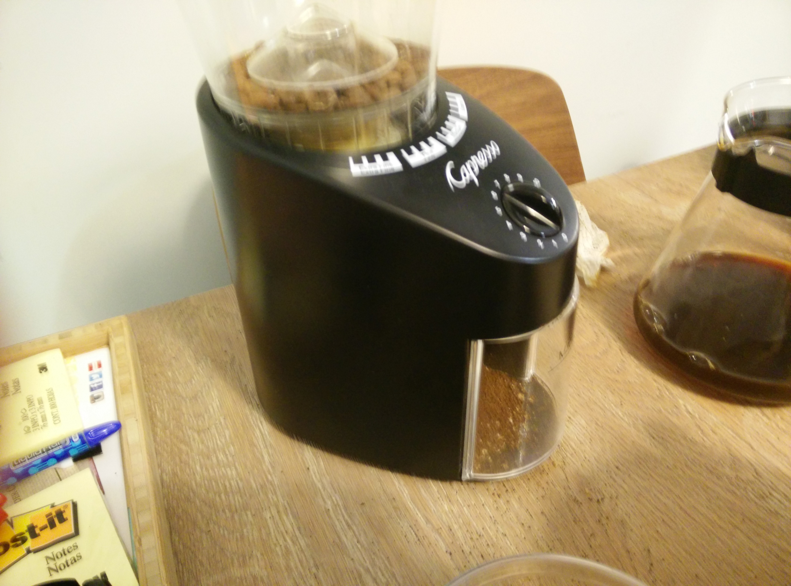
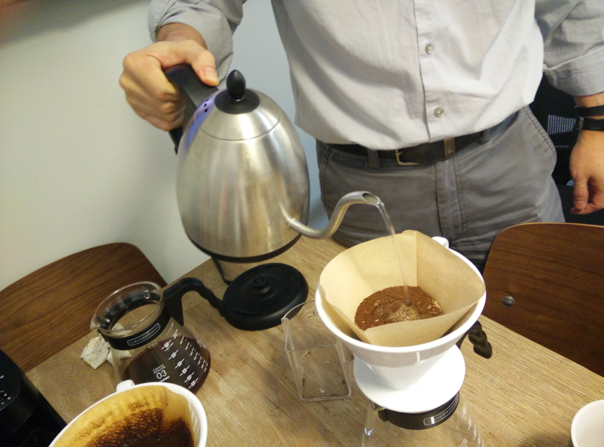
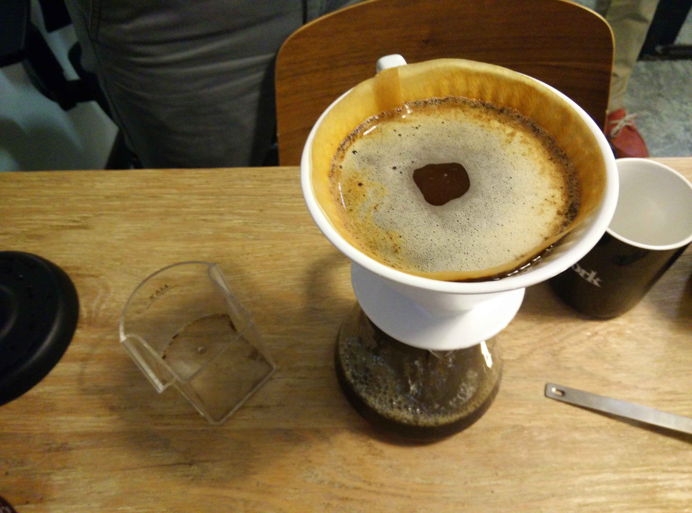
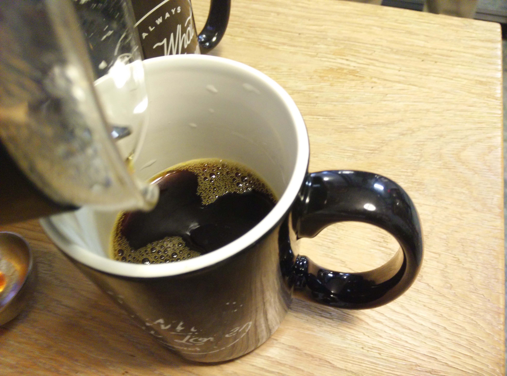

Making Slow Drip Coffee
One of the great parts of being in this program is the amazing group of people I get to be a part of. And while some of them may be really amazing in one area, that excellence usually transfers to other hobbies that they have. One of those classmates is Tohei Yokogawa, a proclaimed neuroscientist with a specialization in zebrafish sleep, with many articles published in that area like this one. But, aside from being a brilliant scientist, he is also a huge coffee aficionado. So I asked him how to make coffee using the slow drip setup we have at Metis and he gladly shared with me some of his expertise.

Step 1
Get enough hot water for however many cups you want to make.

Step 2
One tablespoon of coffee for every 1.5-2 cups you're making. Blend the beans right before you put it into the coffee filter so that they're as fresh as possible.

Step 3
The water should be around 190 degrees hot for a stronger taste, so give it a little bit of time to cool after it's boiling. Pour just enough water into the ground beans so that they are all wet. Wait about a minute. Then we start to pour.

Step 4
Pour in all the water slowly and evenly over the beans. Take breaks when you need to so it doesn't overflow.

Step 5
Enjoy!
What I Learned Today:
Zebrafish are a model organism to study human neurobiology.